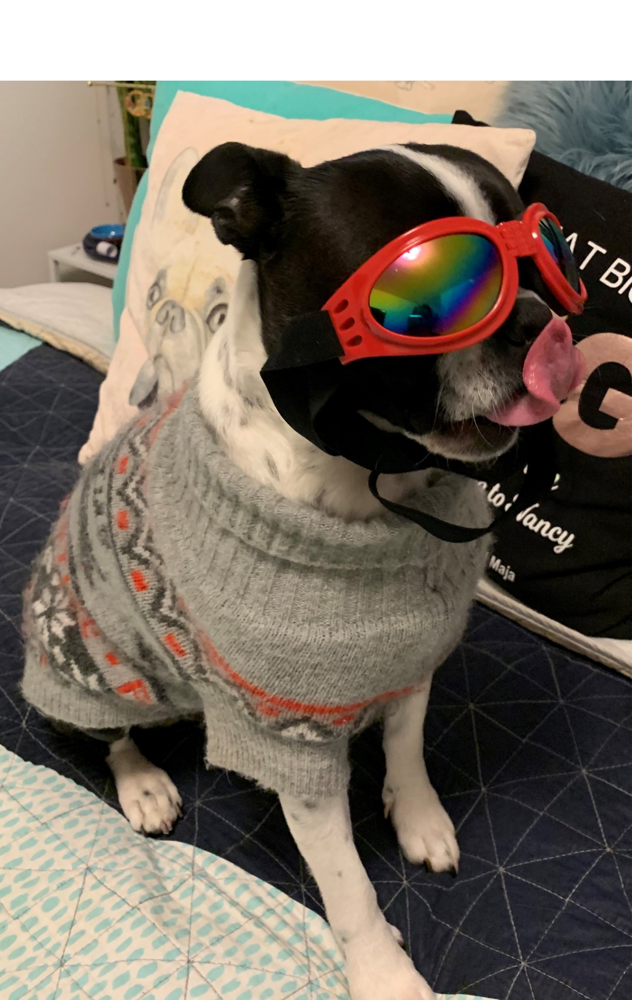
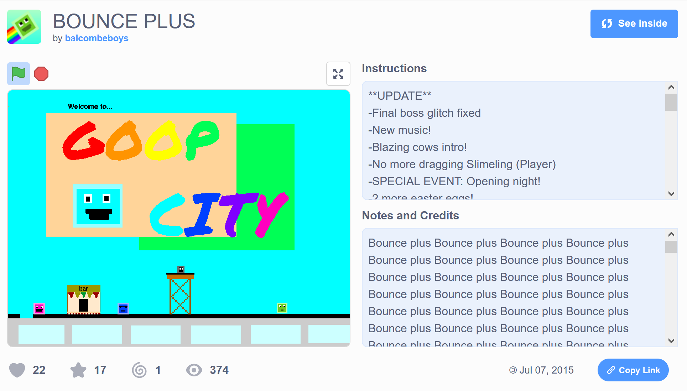
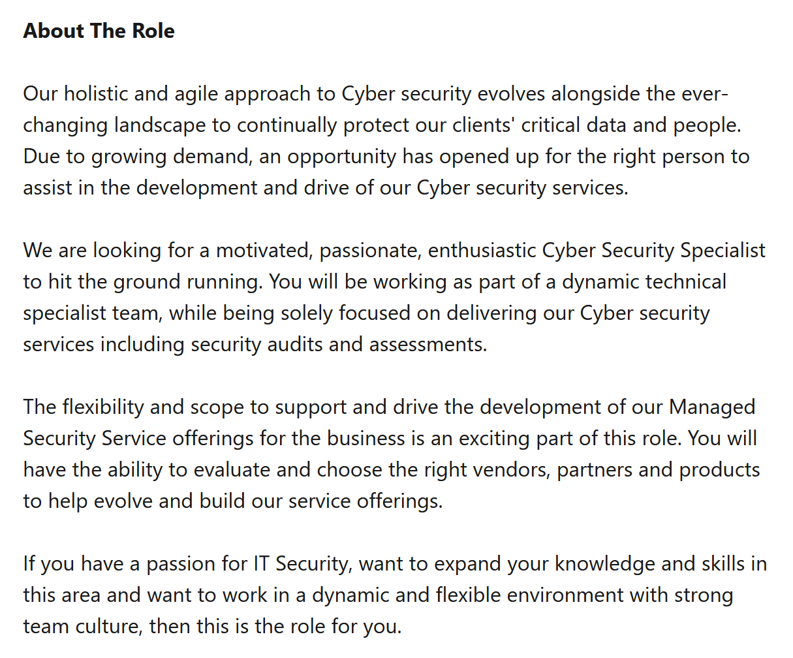
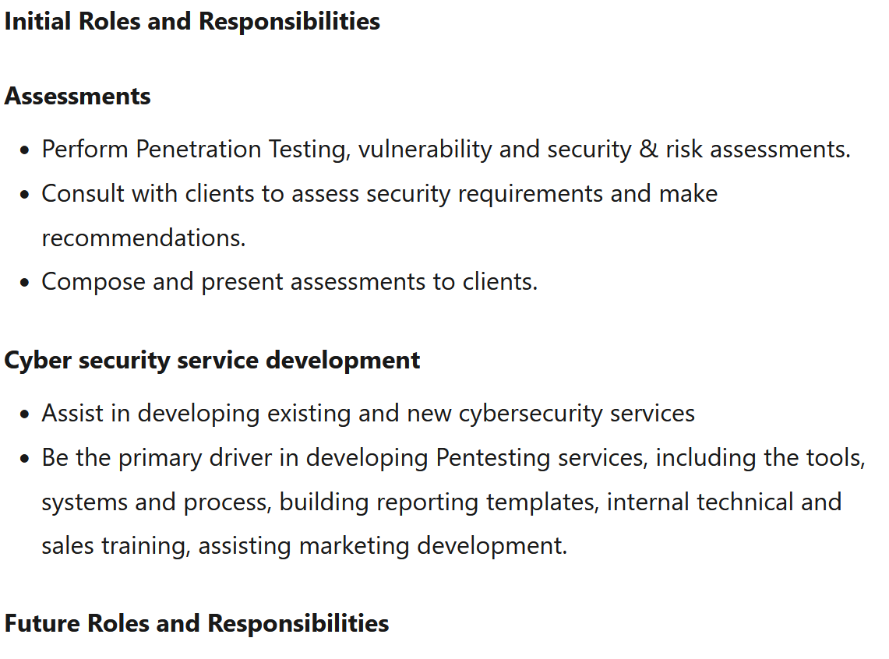
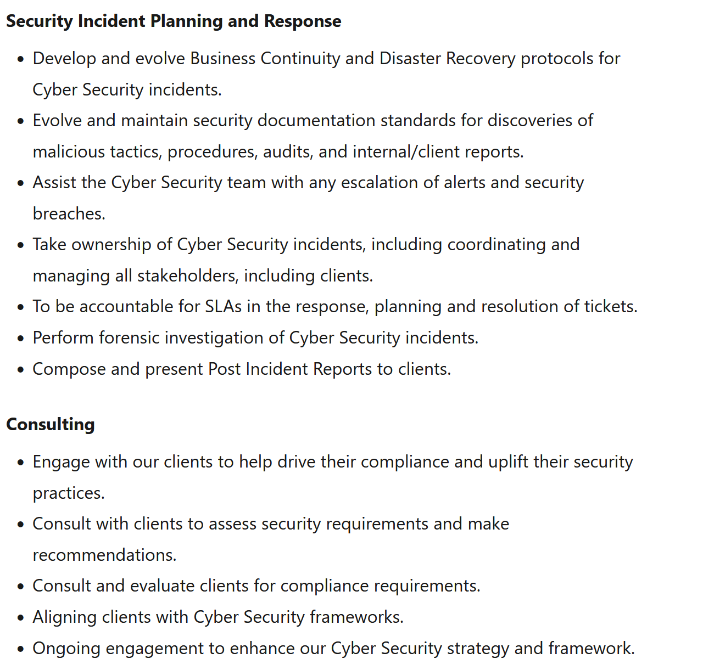
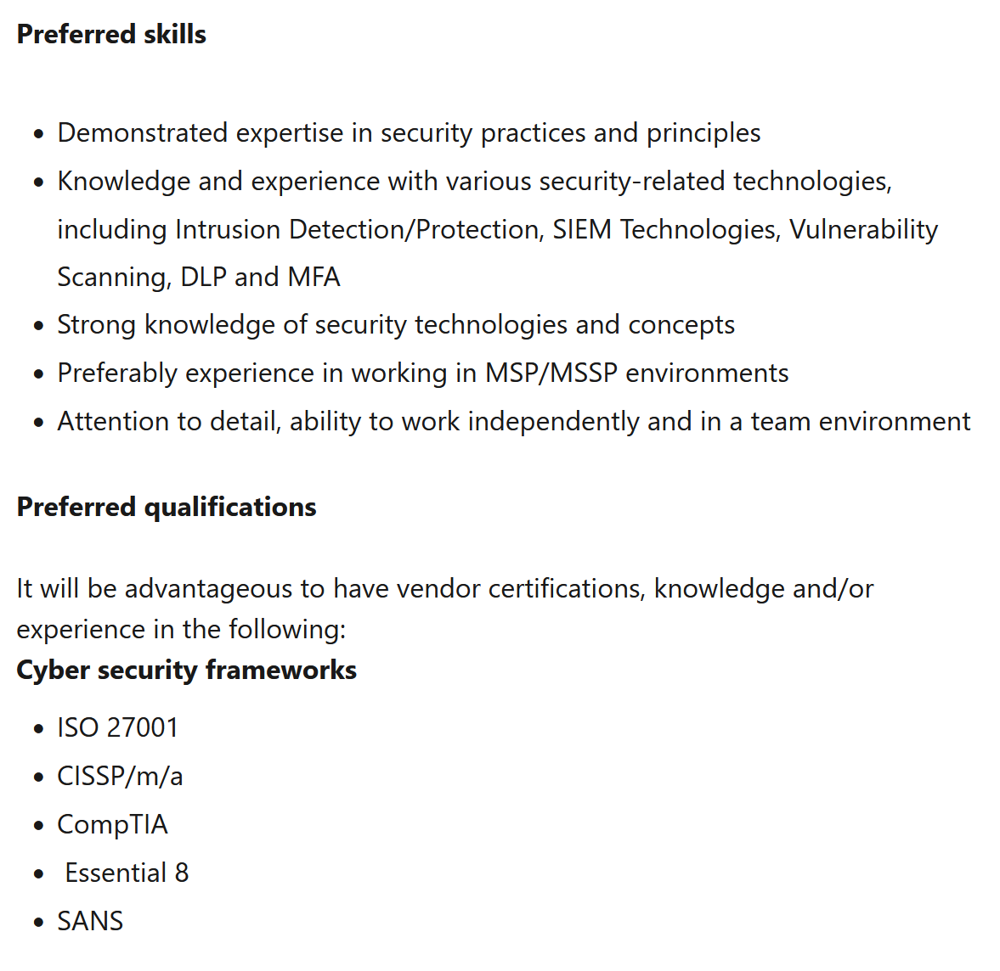
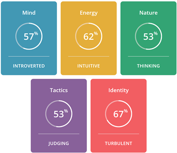
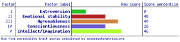
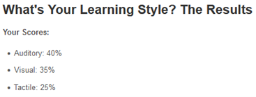

Will Dash - My Profile
Student Number: s3947523
Student Email: s3947523@student.rmit.edu.au
Personal Information
Hi! I’m Will! I was born in Australia and have been around Aussie culture for the majority of my life. Although I’ve always lived in Australia, I have been travelling around the world a bit with my family to places in America and Europe. Despite my submissiveness, I’ve always been passionate towards anything technology and I enjoy learning and helping others with computers. My education consists of completing high school last year and some self-taught skills through the internet. During my years in school, I learnt some programming languages such as visual basic, python and some basic java. But with spoken languages, I only know English. During my free time, I indulge myself in a large variety of PC games, creative activities, anime/manga, cosplay, and spending time with friends. I also have a twin sister, Nina, and a pet dog called Bronte.
Brotne says hi
Interest in IT
What is your interest in IT? When did your interest in IT start?
My interest in IT mainly surrounds the programming aspect. I really enjoy the challenge of designing and creating a program and the satisfaction of spending hours on something for it to finally work how I intended it to. I also like to mix my interest in drawing and designing to create appealing UI. For as long as I can remember I have always been interested in computers. I can still remember back in the early 2000s, when I’d grab my grandma’s old ThinkPad and teach myself how to use Windows Vista, slowly filling the slow laptop with tons of drawings done in MS paint and clicking on every shoddy advertisement until the computer bluescreened. But through these rough experiences of trial and error, and a bunch of YouTube tutorials I managed to learn and discover a lot about the internet and devices in general.
Was there a particular event or person that sparked your interest?
Probably the biggest influence on my interest in IT is my dad. He used to work at IBM when I was young and seeing him work on his computer probably is the spark that got me interested. I primarily got into coding through the website Scratch. After playing some other people’s games I started to remix them (pretty much making a fork of another person’s project) and try to figure out how they worked. Through this, I self-taught myself some basics of programming and had a ton of fun making games with friends.
Here’s a shoddy platformer I made with a couple of friends.

Why did you choose to come to RMIT?
I came to RMIT because after researching all nearby universities and comparing their tech courses, I noticed that RMIT provided one of the best in the area and it would allow me to experience Melbourne city as I live all the way down in Mornington. RMIT is also easy enough to commute to through public transport and I liked the topics that RMIT’s information technology courses cover.
What do you expect to learn during your studies?
My main goal and expectation are to expand my knowledge of several new programming languages and their coding practices. I also aim to understand how different systems operate and communicate with each other on a deeper level. Lastly, I wish to refine my interests in IT and discover which jobs or even entirely separate fields within IT interest me the most.
Table of Contents
Ideal Job
Cyber Security Specialist - Emerging ITFor if the link is dead
   
Emerging IT is after a Cyber Security Specialist to work within a team of technological specialists. This job opportunity focuses on interacting with clients and providing them with Cyber security services such as security audits and assessments. This job appeals to me as I have an interest in cybersecurity and the programs and procedures involved. More specifically, in my time learning python, I discovered that I really enjoyed finding holes or oversights in other people’s programs and suggesting how they could fix them. I’ve also noticed that jobs within the cyber security field are becoming more in demand due to the further integration of technology into our world. I also like to read and watch videos explaining newly discovered security flaws and find them intriguing. It is mentioned in the job offer that I would have the ability to decide on which vendors, partners and products best support the client’s needs and put these practices in effect. Emerging IT lists various roles and responsibilities that this job would include, involving points categorized under ‘assessments’ which are penetration testing, security and risk assessments, discussing security requirements with clients and making recommendations, and creating and proposing assessments to clients. I think these roles perfectly align with my interest in helping others improve their systems to become more robust and secure. Along with this, I have a habit of recommending programs that improve my friends and family’s security on their IoT devices such as password managers and ad blockers. Emerging IT also list some roles grouped under ‘service development’ that mentions developing new cybersecurity services, tools and processes for pen-testing. I think this would appeal to me since I like writing programs to achieve a specific result.
Some preferred qualifications and skills for this career are:
- Expertise in security practices and principles
- Experience with security-related tech, specifically intrusion/detection/protection, SIEM tech, vulnerability scanning, data loss prevention and multi-factor authentication
- Knowledge of security technologies and concepts
- Ability to work independently and in a team environment
- Knowledge in various cyber security frameworks
I do currently have some experience of cybersecurity principles through helping others and some basics were covered in my VCE Computing class while I was in school. Through my Computing class, we briefly went over attack types, physical security, software security controls, data integrity and ethics. I also gained some knowledge on how to properly apply network security through hosting a small Linux server on my home network. I currently do not understand any cyber security frameworks and have minimal experience programming in a team environment but I’m sure these are skills that I can pick up through learning at RMIT.
I plan to gain proper skills and qualifications through university courses by applying for a transfer to computer science as this will allow me to deeply refine my abilities in programming and knowledge of how computers operate in general, before eventually taking a post-graduate course on cyber security. I aim to gain experience collaborating with others in these courses through group work and improve my social abilities through my current job working in retail.
Profile
  
All images are clickable and lead to their websites :)
More detailed view
Myers Brigs test
Big Five Personalities test
Learning Style test
Team Roles test
I found the results of the first two tests somewhat accurate, but still lacking in some areas. For example, the Myers-brigs test correctly identified a lot of traits about me, like my introversion and turbulence but the description of ‘Turbulent Architect’ mentions this personality trait is ‘the bitterest of pessimists’ which I feel doesn’t accurately reflect my personality. The big five personality test gave pretty accurate results with the exception of conscientiousness which I think should have been higher. The learning style test was interesting since I consider myself to be more of a visual learner, but it identified my learning style as auditory. The team roles test seemed pretty accurate. I think these results reflect my behavior when in a team pretty accurately, which is mostly introverted and preferring to do individual work over teamwork but still able to communicate with other team members and collaborate effectively. I also believe this data demonstrates that I am not well suited towards a team-leader position and instead work better as a regular team member. When forming a team, I should take into account my strengths in helping organize the setting of goals and milestones for the project as this is a skill of mine. Also, I should aim to rely on my team to work on their parts to avoid gravitating towards doing most of the work myself.
Project Idea
Overview
My project idea is an interactive program that informs and tests the knowledge of the users on basic cyber security practices and everyday security practices that should be followed on all internet of things devices. The aim is to build this program in python and explain all of the necessary information in an easy to understand and coherent manner. Specifically, I want the program to be modular, to allow the easy addition of information as required, and to include basic text information on these security practices as well as an interactive section that will quiz the user on the information it has previously explained in the aim for the user to retain that knowledge.
Motivation
This project is useful because it will be aimed at teaching in an easy-to-understand manner to allow almost any level of computer knowledge to be able to use and understand the information contained in the program. “Governments worldwide saw a 1,885% increase in ransomware attacks” (Fortune.com, 2021, para. 2) throughout 2021, this massive rise in attacks really exemplifies the need to educate people who aren’t as knowledgeable about tech and inform them how they can protect themselves. Especially due to the increasing reliance on devices to perform everyday activities. I decided to pick this project specifically as it strongly connects to my ideal job as a Cybersecurity Specialist through informing others on how they can improve their system’s security and will require me to thoroughly research these practices to be able to explain them in a clear and easy-to-understand manner.
Description
I have decided to include the following features in my program:
Teaching/Testing sections
I want the two main features of the program to be to explain various security practices to the user and to test their knowledge afterwards as a method of retaining the information. For the teaching section, I will aim to include short and simple explanations alongside diagrams and other visual imagery to improve understanding, all the teaching sections will be categorized under online safety, privacy, social media/communication safety, device safety, and password safety. Online safety will focus on adblockers, online shopping and basic scams. Privacy will focus on how you can keep your personal information safe with different emails, different aliases, and settings. Social media/communication safety will focus on identifying phishing emails and distrusting strangers. Device safety will focus on antivirus, encryption, and backups. Password safety will focus on the use of password managers and why they’re important. A potential limitation of this section is the possibility of giving too much information too quickly or just confusing the user. To mitigate this problem, word choice and diagrams need to be carefully created to be simple enough to understand, but still correct. For the testing section, the aim is to keep a record of which sections the user has been through and give them multiple-choice questions related to those topics, the questions will be pre-done and randomized in the order they’re given to the user.
Modularity
To avoid having to hard code in each page and question into the program, I aim to make the program modular by instead reading the data that contains descriptions, questions, and answers from a storage format such as an XML file. This will make it very easy to update or make changes to the content in the program. Images can be stored in a separate folder. A potential drawback is it may be hard to indicate where a certain image or diagram is placed, and it may overcomplicate the creation of the program beyond our abilities.
Focus on the UI
Having a clean, easy to use UI will be essential for this program. This is due to the wide range of ability with computers that the users will have, we don’t want to confuse or turn away potential users. In the creation of the UI, we will also have to take accessibility into account to accommodate for more people. Eg, larger text to accommodate for the degradation of an elderly person’s sight.
Computers over mobile devices
I plan to make this a program that can be run on a PC over a phone application as most of the information I plan to explain to the user can be applied most effectively on a PC. Whereas mobile devices are currently a lot safer than PCs due to being more locked down (eg. Hard to install 3rd party apps on iOS, need to turn on a setting for Android) and security features are being integrated into newer systems. Some drawbacks I can identify due to this decision is the inability for our program to reach anyone who does not own a computer and the requirement to install this program beforehand may confuse potential users.
Tools/techs
Python - For this program, I plan to write it in Python. This is due to me already being familiar with it while also being a language that can run on Windows, macOS and Linux enabling anyone running these operating systems to use the program. (Might consider TempleOS for version 2.0)
PyQt5 - This is the python UI module I plan to use for the UI of the program. I picked this because while it does have a steeper learning curve than other UI modules, it is much more robust and highly customizable to better suit our needs. Whereas a module such as Tkinter is too basic and harder to make it suit our needs.
XML.etree.ElementTree - Python module that will be used to parse data from the XML file where descriptions, questions and answers will be stored.
PC - Any computer would be required to run the program
Skills
The skills required for this project would mainly include knowledge in the python programming language, extending to writing UI code through the PyQt5 module along with parsing data through an XML module. Also, knowledge of good UI practices would be necessary to create a fluent and understandable user interface. Knowledge of good cyber security practices would be essential before being able to explain the appropriate knowledge to the user without flaws. These skills are reasonably feasible and would take on estimate two or three months to learn from scratch. This is due to the bulk of the learning-based around understanding python and its modules.
Outcome
The intended outcome for this project is to inform as many potential victims of cybercrime as possible. Realistically, this project won’t create a massive impact on those affected by cyberattacks but the more people who have this knowledge and understand these concepts, the better. The original problem would be solved by teaching vulnerable people how they can keep themselves safe online and hopefully leading to them applying these practices or avoiding getting scammed/attacked due to the information that the program covers.